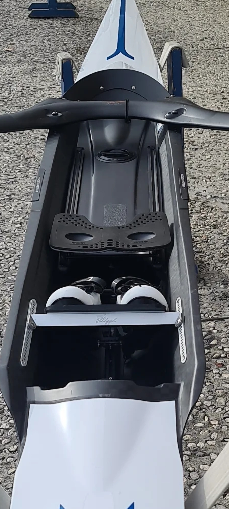

Obstaja več vrst veslaških čolnov, ki se uporabljajo pri različnih disciplinah v veslanju na olimpijskih igrah. Nekatere najpogostejše vrste veslaških čolnov so:
- Enojec (Single scull): To je čoln, ki ga upravlja en sam veslač. Ima dva vesla, enega v vsaki roki, in se uporablja za disciplino samostojnega veslanja.
- Dvojni dvojec (Double scull): To je čoln, ki ga upravljata dva veslača. Ima dva vesla, enega za vsakega veslača, in se uporablja za disciplino dvojnega veslanja.
- Dvojni dvojec brez krmarja (Double scull without coxswain): Ta čoln je enak kot dvojni čoln, vendar nima krmarja in ga veslača sama usklajujeta. Ta čoln se uporablja v disciplini dvojnega veslanja brez krmarja.
- Enojni dvojec
- Enojni dvojec brez krmarja
- Četverec (Quadruple scull): To je čoln, ki ga upravljajo štirje veslači. Ima štiri vesla in se uporablja v disciplini četverca.
- Četverec brez krmarja (Quadruple scull without coxswain): Ta čoln je enak kot četverec, vendar brez krmarja in ga veslači sami usklajujejo. Uporablja se v disciplini četverca brez krmarja.
- Osmerica (Eight): To je največji čoln, ki ga upravlja osem veslačev. Ima osem vesel in enega krmarja, ki ga usmerja. Ta čoln se uporablja v disciplini osmeric.
- Peta točka
- Peta točka
- Peta točka
Poznamo tudi lahke veslaške čolne:
- Lahki enojec (Lightweight single scull): To je čoln, ki ga upravlja en sam veslač, vendar mora biti veslač teže pod določeno mejo. Ta čoln se uporablja v disciplini lahkega samostojnega veslanja.
- Lahki dvojni dvojec (Lightweight double scull): Ta čoln je enak kot dvojni čoln, vendar morata biti oba veslača teže pod določeno mejo. Uporablja se v disciplini lahkega dvojnega veslanja.
- Lahki dvojni dvojec brez krmarja (Lightweight double scull without coxswain): To je enak čoln kot dvojni čoln brez krmarja, vendar morata biti oba veslača teže pod določeno mejo. Uporablja se v disciplini lahkega dvojnega veslanja brez krmarja.
- Lahki četverec (Lightweight quadruple scull): To je enak čoln kot četverec, vendar morajo biti vsi štirje veslači teže pod določeno mejo. Uporablja se v disciplini lahkega četverca.
- Lahki četverec brez krmarja (Lightweight quadruple scull without coxswain): Ta čoln je enak kot četverec brez krmarja, vendar morajo biti vsi štirje veslači teže pod določeno mejo. Uporablja se v disciplini lahkega četverca brez krmarja.
- Lahka osmerica (Lightweight eight): To je enak čoln kot osmerica, vendar morajo biti vsi osem veslačev teže pod določeno mejo. Uporablja se v disciplini lahke osmerica.
- Krmarjev čoln (Coxed boat): To je čoln, ki ga upravljajo veslači, vendar ima tudi krmarja, ki ga usmerja. Uporablja se v disciplinah, kot je na primer četverecs krmarjem.
